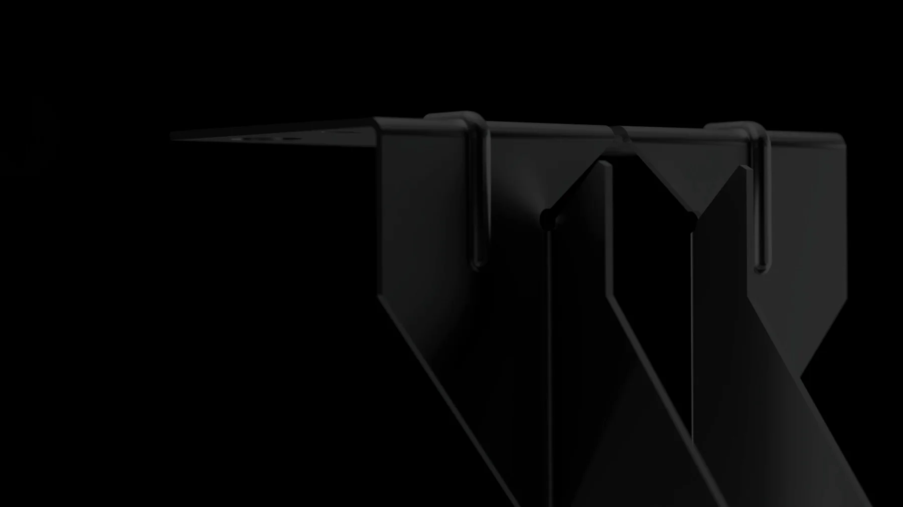
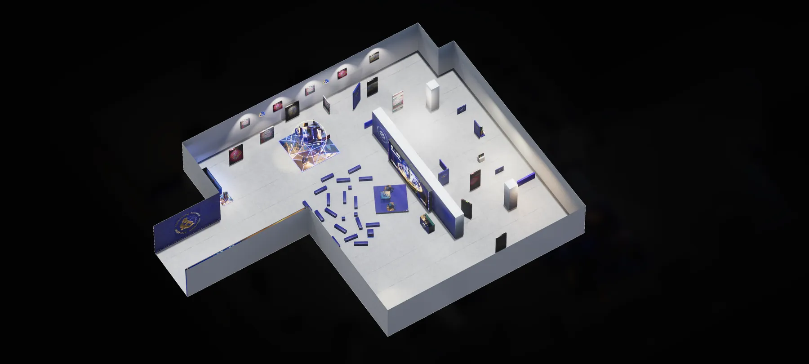

Chuyển từ 3ds Max sang Blender: lộ trình 4 tuần

Chuyển từ 3ds Max sang Blender thường mất khoảng ba tới sáu tuần để quay lại mức làm việc được, không phải vài ngày như các video giới thiệu hay nói. Phần khó không nằm ở tính năng, vì hầu hết việc bạn làm trong 3ds Max đều có chỗ tương ứng trong Blender. Phần khó nằm ở phím tắt, ở logic chọn đối tượng và ở việc bạn phải dựng lại toàn bộ vật liệu.
Bài này viết cho người đã dùng 3ds Max đi làm thật, mảng nội thất, kiến trúc, gian hàng hoặc sản phẩm, và đang tính đổi sang Blender. Nếu bạn chưa biết nên chọn phần mềm nào từ đầu thì đọc bài Blender hay 3ds Max, C4D trước, vì bài này giả định bạn đã quyết định chuyển rồi và chỉ cần biết chuyển ra sao cho đỡ mất thời gian.
Chuyển từ 3ds Max sang Blender mất bao lâu
Mốc dưới đây là ước lượng từ nhóm người học quanh LXAM Studio, phần lớn là người đã đi làm bằng 3ds Max từ hai năm trở lên. Con số này thay đổi theo mảng bạn làm, nên hãy đọc như khoảng tham khảo.
| Mốc | Khoảng thời gian ước lượng | Dấu hiệu bạn đã qua mốc đó |
|---|---|---|
| Hết bỡ ngỡ giao diện | Khoảng 3 tới 7 ngày | Không còn phải dừng lại tìm nút mỗi vài phút |
| Dựng lại được một vật quen thuộc | Khoảng 1 tới 2 tuần | Làm xong một món từng làm bằng 3ds Max, không cần xem hướng dẫn |
| Ra được hình sạch bằng Cycles | Khoảng 2 tới 4 tuần | Ánh sáng và chất liệu đạt mức bạn từng đạt ở phần mềm cũ |
| Quay lại tốc độ làm việc cũ | Khoảng 3 tới 6 tuần | Ước lượng được thời gian một job mà không hụt |
| Nhận job thật bằng Blender | Sau mốc trên, thường thêm 1 tới 2 tuần | Chạy trọn một job từ brief tới file giao mà không mở 3ds Max |
Điều đáng chú ý là mốc thứ tư, không phải mốc thứ nhất. Rất nhiều người dừng ở chỗ dùng được nhưng chậm hơn trước, thấy bực rồi quay lại phần mềm cũ. Nếu bạn đã quyết chuyển, hãy đặt kỳ vọng cho đúng: sẽ có khoảng hai tới ba tuần bạn làm chậm hơn mình của tháng trước.
Kỹ năng bạn giữ được và thứ phải học lại
Tin tốt là phần lớn thời gian bạn bỏ ra cho 3ds Max không mất. Phần mềm chỉ là lớp vỏ, bên dưới vẫn là cùng một nghề.
| Nhóm | Giữ nguyên được | Phải học lại |
|---|---|---|
| Dựng hình | Tư duy khối, tỉ lệ, đọc bản vẽ, cách chia lưới sạch | Phím tắt, cách chọn thành phần, tên gọi công cụ |
| Vật liệu | Hiểu biết về phản xạ, độ nhám, lớp phủ, bản đồ ảnh | Toàn bộ thư viện cũ, cách nối node trong Blender |
| Ánh sáng | Bố trí đèn, kiểm soát tương phản, phơi sáng | Tên thông số và cách đặt đèn trong Blender |
| Render | Cách khử nhiễu, chọn độ phân giải, xuất theo lớp | Thiết lập của Cycles và Eevee, cách chia lớp mới |
| Quy trình | Cách tổ chức cảnh, đặt tên, làm việc với khách | Cấu trúc collection thay cho layer và group cũ |
Nhìn cột giữa thì thấy ngay: thứ bạn giữ được nhiều hơn thứ phải bỏ. Đây cũng là lý do người có nghề chuyển nhanh hơn người mới học từ đầu rất nhiều, kể cả khi tuần đầu họ thấy vụng về. Nếu bạn muốn so Cycles với Eevee trước khi chọn engine chính, bài học render Cycles và Eevee chia theo từng loại việc chứ không chia theo thông số.
Đổi phần mềm không làm mất nghề của bạn. Nó chỉ làm bạn chậm trong vài tuần, và phần lớn người bỏ cuộc là vì không chấp nhận nổi vài tuần đó.
Bảng đối chiếu những thứ bạn dùng hằng ngày
Đây là phần tiết kiệm thời gian nhất cho tuần đầu. Thay vì tra từng thứ khi cần, in bảng này ra và để cạnh máy.
| Trong 3ds Max | Tương đương trong Blender | Khác biệt cần nhớ |
|---|---|---|
| Modifier Stack | Modifier Properties | Thứ tự vẫn từ dưới lên, nhưng không gộp theo nhóm như cũ |
| Editable Poly | Edit Mode với ba chế độ đỉnh, cạnh, mặt | Chuyển chế độ bằng phím số thay vì bấm biểu tượng |
| TurboSmooth | Subdivision Surface | Nên dùng kèm cạnh phụ hoặc bevel để giữ cạnh cứng |
| Chamfer | Bevel | Cho đổi số phân đoạn ngay trong lúc thao tác |
| Symmetry | Mirror | Phụ thuộc gốc toạ độ của đối tượng, kiểm tra trước khi dùng |
| Layer Manager | Collection trong Outliner | Lồng được nhiều tầng, dùng luôn để bật tắt khi render |
| Slate Material Editor | Shader Editor | Cùng kiểu node, khác tên và khác cách nối mặc định |
| V-Ray Physical Camera | Camera với phần Depth of Field và Exposure | Thông số phơi sáng nằm rải ở hai chỗ, không gộp một bảng |
| Render Elements | View Layer và Passes | Chia lớp linh hoạt hơn nhưng phải tự đặt tên cho gọn |
Có hai thói quen nên đổi sớm. Thứ nhất, dùng collection ngay từ ngày đầu thay vì để mọi thứ trong một đống, vì cảnh lớn mà không chia collection thì khâu render theo lớp sẽ rất khổ. Thứ hai, tập quen với việc chuột phải không phải là menu lệnh chính, phần lớn thao tác đi qua phím tắt và menu bên.
Đưa file và thư viện cũ sang Blender
Đây là chỗ nhiều người hụt hẫng nhất, nên nói thẳng: bạn không mang được cả thư viện sang. Hình khối thì sang được, phần còn lại thì không.
Hình khối và UV
Xuất từ 3ds Max ra FBX cho cảnh có nhiều đối tượng, OBJ cho vật đơn lẻ, USD nếu bạn làm việc theo nhóm và cần giữ cấu trúc. Trước khi xuất, kiểm tra đơn vị đo và reset xform, vì sai tỉ lệ lúc nhập vào là lỗi hay gặp nhất và thường chỉ lộ ra khi bạn đặt đèn.
Vật liệu
Vật liệu V-Ray hoặc Corona gần như luôn phải dựng lại. Thứ mang sang được là các file ảnh bản đồ. Cách đỡ mất công nhất là lập một bộ vật liệu gốc trong Blender cho những chất bạn dùng nhiều nhất, thường là nhựa, kim loại sơn, kim loại trần, gỗ, kính, rồi lưu thành file thư viện để nối vào cảnh sau này.
Thư viện mẫu và add-on
Phần lớn add-on của 3ds Max không có bản cho Blender, nhưng hệ sinh thái bên này cũng dày tương đương. Danh sách add-on nên cài cho người làm hard surface nằm ở bài add-on hard surface Blender, cài vừa đủ thôi, cài nhiều quá thì tuần đầu càng rối.

Lộ trình bốn tuần chuyển từ 3ds Max sang Blender
Lộ trình này giả định bạn vẫn đi làm, học được khoảng một tới hai giờ mỗi ngày. Nguyên tắc xuyên suốt: không học dàn trải, mỗi tuần làm lại một việc bạn vốn đã làm được bằng phần mềm cũ.
| Tuần | Trọng tâm | Bài phải nộp cuối tuần |
|---|---|---|
| Tuần 1 | Điều hướng, chọn đối tượng, phím tắt, collection | Dựng lại một món đồ đơn giản đã từng làm, chưa cần chất liệu |
| Tuần 2 | Modifier, bevel, subdivision, nhập file FBX cũ | Một vật hard surface có cạnh sạch, nhìn gần không gãy |
| Tuần 3 | Shader Editor, bộ vật liệu gốc, ánh sáng ba hướng | Một ảnh sản phẩm đủ sạch để đưa vào hồ sơ |
| Tuần 4 | Cycles, khử nhiễu, render theo lớp, hậu kỳ | Làm lại một job cũ của chính bạn, so hai bản cạnh nhau |
Bài của tuần thứ tư là bài quan trọng nhất và cũng hay bị bỏ qua nhất. Khi đặt bản cũ và bản mới cạnh nhau, bạn thấy ngay mình còn thiếu khâu nào, thay vì đoán. Nếu muốn một thứ tự kỹ năng đầy đủ hơn cho giai đoạn sau, bài lộ trình tự học Blender xếp bảy kỹ năng theo đúng thứ tự nên học.
Những chỗ Blender thua 3ds Max, nói thẳng
Không có phần mềm nào thắng toàn diện. Biết trước mấy điểm này sẽ đỡ bực hơn là phát hiện ra giữa lúc chạy job.
- Hệ sinh thái nội thất và kiến trúc. Thư viện model, vật liệu và plugin cho mảng này bên 3ds Max vẫn dày hơn, nhất là với người cần model nội thất thương mại.
- Làm việc với file của đối tác. Nhiều công ty và nhà thầu vẫn gửi nhận bằng định dạng của 3ds Max. Bạn sẽ phải qua một bước chuyển đổi, và bước đó luôn có hao hụt.
- Vài công cụ dựng hình theo bản vẽ. Một số thao tác quen tay trong 3ds Max phải thay bằng cách làm khác hoặc bằng add-on, chứ không có nút tương đương một đổi một.
- Người xung quanh. Nếu cả nhóm dùng 3ds Max, bạn thành người duy nhất không nhờ được ai khi kẹt. Đây là bất lợi thật và ít người nhắc.
Đổi lại, Blender được phần miễn phí, cập nhật nhanh, một mình chạy được cả chuỗi từ dựng hình tới dựng cảnh động, và cộng đồng tài liệu rất rộng. Với người làm sản phẩm, gian hàng hoặc hình quảng cáo, phần được thường lớn hơn phần mất. Với người làm nội thất số lượng lớn, cân nhắc kỹ hơn.
Danh sách kiểm tra trước khi nhận job thật bằng Blender
- Bạn dựng lại được một món cũ trong thời gian không quá gấp rưỡi lúc làm bằng 3ds Max.
- Bạn có bộ vật liệu gốc cho ít nhất năm chất liệu dùng nhiều nhất.
- Bạn nhập được file FBX hoặc OBJ của đối tác mà không sai tỉ lệ, không lật mặt.
- Bạn render được theo lớp và ghép lại ở hậu kỳ, không chỉ xuất một ảnh phẳng.
- Bạn biết máy mình render một cảnh cỡ trung mất bao lâu, để còn ước lượng cho khách.
- Bạn đã làm trọn một bài từ brief tới file giao mà không phải mở phần mềm cũ.
Thiếu hai mục trở lên thì chưa nên nhận job gấp bằng Blender. Làm thêm một hai bài tự đặt đề cho đủ, vì job đầu tiên trễ hẹn sẽ tốn của bạn nhiều hơn vài tuần luyện thêm. Nếu máy của bạn đã cũ và bạn lo Cycles chạy không nổi, bài cấu hình máy học Blender nói rõ ngưỡng nào là đủ và ngưỡng nào thì nên nâng.
Chuyển từ 3ds Max sang Blender có đáng không
Đáng, nếu bạn làm sản phẩm, quảng cáo, gian hàng, sự kiện hoặc muốn tự chạy trọn một shot mà không phụ thuộc giấy phép phần mềm. Quãng chuyển đổi khoảng ba tới sáu tuần là có thật, nhưng nó ngắn hơn nhiều so với cảm giác lúc ở trong đó, và phần nghề bạn tích luỹ suốt những năm dùng 3ds Max vẫn đi theo bạn gần như nguyên vẹn.
Chưa đáng, nếu bạn đang làm trong một nhóm chạy toàn bộ bằng 3ds Max và không ai có ý định đổi. Trường hợp đó, dùng song song vài tháng là cách hợp lý hơn: giữ phần nhận và trả file ở phần mềm cũ, đưa phần chất liệu và ánh sáng sang Blender, rồi quyết định sau khi đã có dữ liệu thật từ chính công việc của mình.
Hỏi đáp
Chuyển từ 3ds Max sang Blender mất bao lâu?
Với người đã dùng 3ds Max thành thạo, ước lượng thường gặp là khoảng ba tới sáu tuần học đều để quay lại mức làm việc được, tính theo vài buổi mỗi tuần. Tuần đầu là tuần khó chịu nhất vì tay vẫn nhớ phím cũ. Từ tuần thứ ba trở đi tốc độ hồi lại khá nhanh, vì phần tư duy dựng hình và ánh sáng của bạn không mất đi đâu cả.
Có nên bật Emulate 3 Button Mouse hay dùng keymap giống 3ds Max không?
Keymap giả lập giúp tuần đầu dễ thở hơn nhưng kéo dài quãng chuyển. Lý do là mọi hướng dẫn, mọi add-on và mọi người bạn hỏi đều nói theo phím mặc định của Blender. Cách đỡ mệt nhất là giữ keymap mặc định, chỉ đổi lại vài phím bạn dùng nhiều nhất, và chấp nhận chậm trong khoảng mười ngày.
File .max cũ có mở được trong Blender không?
Không. Blender không đọc được định dạng .max. Bạn phải mở bằng 3ds Max rồi xuất ra FBX, OBJ hoặc USD, sau đó nhập vào Blender. Hình khối và UV thường sang được khá nguyên vẹn, còn vật liệu V-Ray hay Corona thì gần như phải dựng lại trong hệ node của Blender.
Chuyển sang Blender rồi thì kỹ năng V-Ray có còn dùng được không?
Phần hiểu biết về ánh sáng, phơi sáng, vật liệu phản xạ và khử nhiễu vẫn dùng được gần như toàn bộ, vì đó là kiến thức về nhiếp ảnh chứ không phải về một engine. Thứ mất đi là thói quen bấm theo giao diện V-Ray. Cycles có cách gọi tên khác nhưng cùng một logic, nên phần học lại chủ yếu là tên gọi và vị trí nút.
Có nên bỏ hẳn 3ds Max hay dùng song song?
Nếu công ty hoặc khách của bạn vẫn chạy file 3ds Max thì dùng song song là lựa chọn an toàn trong vài tháng đầu: dựng hoặc nhận file ở 3ds Max, đưa sang Blender để làm chất liệu, ánh sáng và render. Chỉ bỏ hẳn khi bạn đã chạy trọn một job thật bằng Blender mà không phải quay về phần mềm cũ để cứu khâu nào.
Nếu bạn muốn rút ngắn quãng bốn tuần đó bằng cách có người soi bài từng tuần thay vì tự mò, hai hệ ở trang khoá học 3D Blender ghi rõ mỗi chặng bạn phải nộp được gì. Còn nếu bạn muốn tự đi trước một đoạn, tải cẩm nang Blender và làm phần bài tập dựng hình trong đó bằng Blender, coi như bài tuần một.
Đọc tiếp

Muốn được sửa bài trực tiếp?
Coaching 1:1 online, đồng hành trọn một năm. Để lại thông tin, tôi xem qua và tư vấn bạn nên bắt đầu từ đâu.
Đăng ký tư vấn